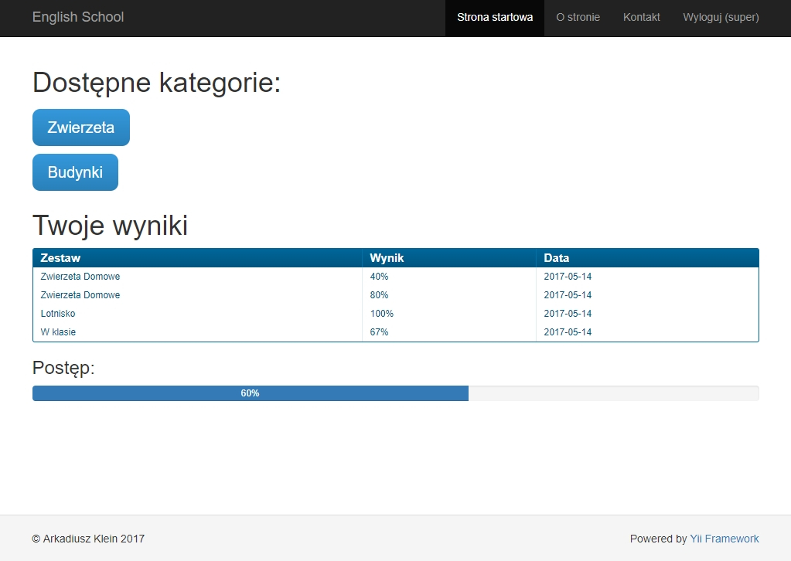
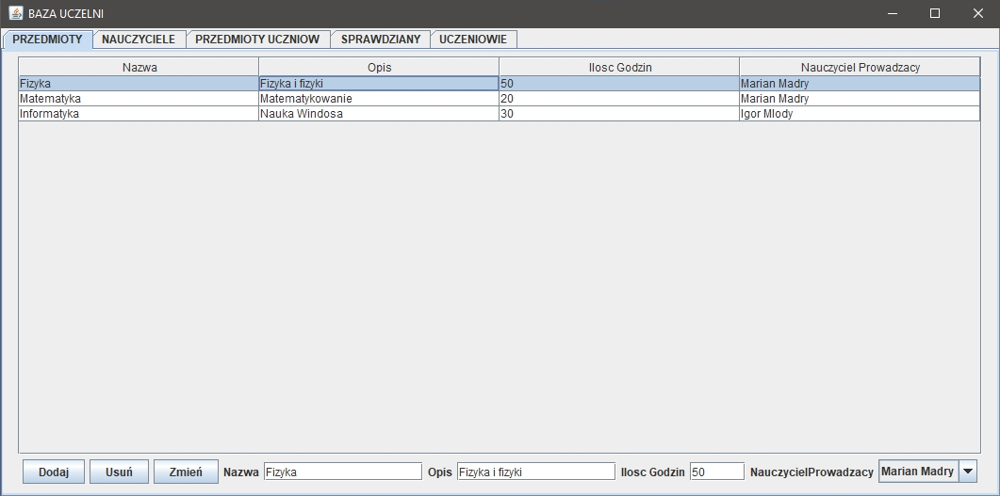
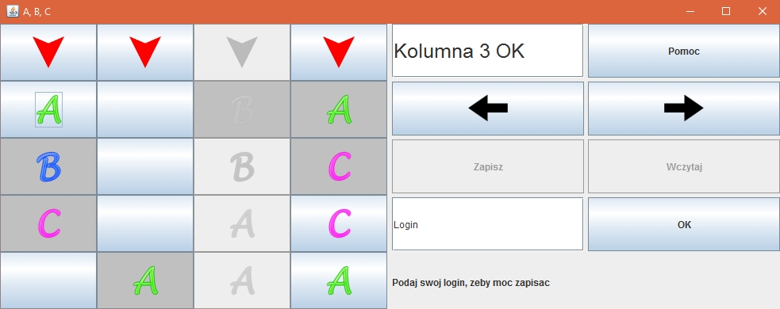
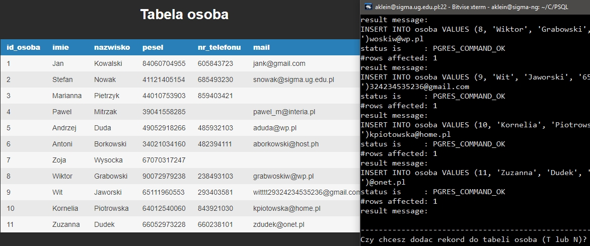
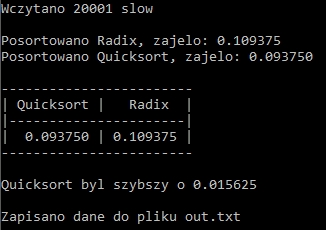
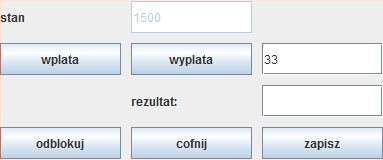
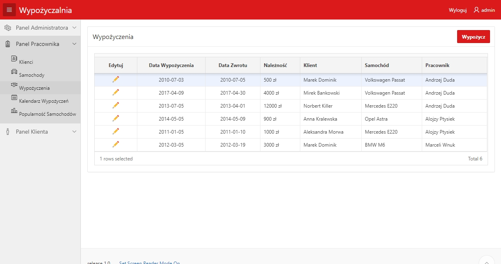

Arkadiusz Klein
Jestem 21-letnim studentem informatyki na Uniwersytecie Gdańskim na 4 semestrze.
Szukam praktyk zawodowych i myślę, że najbardziej chciałbym zajmować się tworzeniem stron internetowych.
Obecnie jestem gotowy zacząć pracować od zaraz poświęcając wolny czas po zajęciach oraz w weekendy (studiuję dziennie).
Jestem też zainteresowany ofertami praktyk w czasie wakacji.
Na studiach poznałem takie języki programowania jak: C, Java, SQL, HTML, XML (wraz z XSD, XSLT).
Dodatkowo w podstawowym zakresie: CSS, PHP, Bash, Assembler.
Obecnie w wolnych chwilach staram się nauczyć więcej CSS'a oraz JavaScript.
Przykłady moich prac można znaleźć w zakładce Przykłady.
Zainteresowania
Interesuję się głównie programowaniem oraz budową komputerów. Pierwszą styczność z jakimś kodem miałem
w gimnazjum na lekcji informatyki, gdzie napisałem bardzo prostą stronę internetową. Potem
zacząłem szukać więcej materiałów, z których mógłbym się nauczyć więcej i z tego powstała
moja pierwsza, bardziej rozbudowana strona na projekt szkolny dotyczący Gdyni.
Stronę tą następnie lekko przerobiłem na studiach, jednak wciąż nie spełnia obecnych
standardów. Jest ona dostępna TUTAJ.
Niedawno po dodatkowej styczności z HTML i CSS postanowiłem nauczyć się tworzenia stron od nowa, zgodnie już ze standardami.
Kolejną styczność z kodem miałem w trakcie liceum. Pierw na weekendowym kursie C++, a potem na zajęciach informatyki też C++.
Dodatkowo interesowałem się obróbką zdjęć oraz wideo. Mam dzięki temu podstawową znajomość programów:
- Adobe Photoshop
- GIMP
- Sony Vegas
- Adobe After Effects
Przykłady moich prac
Strona w PHP na frameworku Yii 2
Aplikacja umożliwiająca naukę oraz sprawdzanie znajomości słówek z języka obcego. Możliwości aplikacji zależą od roli użytkownika. Aplikacja jest podzielona na frontend (użytkownik niezarejestrowany, zarejestrowany, redaktor, super redaktor) oraz backend (CRUD tylko dla administratora).
Każdy użytkownik frontendu ma możliwość nauki/sprawdzania wiedzy w zestawie słówek.
Wyniki użytkownika zarejestrowanego są dodatkowo zapisywane w bazie danych oraz wyświetlany jest postęp.
Redaktor może dodawać zestawy do podkategorii, do której ma uprawnienia (tutaj są to: szkoła, dom, lotnisko) oraz edytować zestawy dodane przez siebie.
Super redaktor może dodawać i edytować wszystkie zestawy w podkategorii, do której ma uprawnienia (tutaj to: lotnisko, ssaki).
Przykładowa strona znajduje się TUTAJ.
Login i hasło konta redaktora: redaktor redaktor
Login i hasło konta super redaktora: super supersuper

java_Uczelnia
Program MVC do zarządzania prostą bazą danych uczelni. Wykorzystuje jdbc oraz bazę danych mysql. Projekt w Netbeans.

java_spring_ABC
Prosta gra wykorzystująca interfejs graficzny spring. Użytkownik ma możliwość: zapisu i odczytu stanu, cofania, uzyskania pomocy.

C_postgres
Program do dodawania do bazy danych psql danych z pliku .csv. Dodatkowo dla wywołania ./1 nazwatabel1 ... strona.html zostaną wydrukowane z bazy danych tabele do pliku HTML. Wymaga zainstalowanego postgres lokalnie (lub zdalnie po modyfikacji adresu ip w kodzie). Do kompilacji można użyć komendy make 1 .

C_quick_radix
Wykorzystanie algorytmu radix oraz quicksort do posortowania pliku naz.txt oraz porównaniu czasu pracy 2 algorytmów.

java_konto
Interfejs "konta" bankowego pozwalający na odczyt, zapis, wpłaty, wypłaty oraz zawiera historię operacji.

omnie
Ta strona
Prosta strona z podstawami PHP
Wypożyczalnia samochodów w APEX 5
System umożliwiający logowanie się z różnych ról (pracownik, klient) i zarządzanie wypożyczalnią.
Login i hasło administratora
(największe uprawnienia) to: admin admin .
